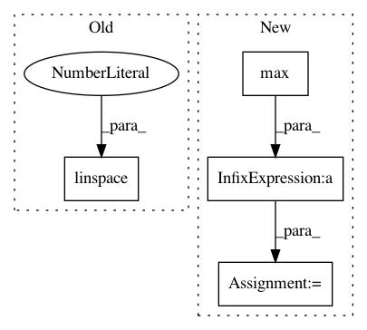

0bb84f3b54b9222fe981670972cb60e0c1bfdd4b,tests/teststf.py,TestEverything,test_predict,#TestEverything#,88
Before Change
xmax = np.max(self.x_small)
xmin = np.min(self.x_small)
res = my_pwlf.fit_with_breaks((xmin, xmax))
x = np.linspace(xmin, xmax, 10)
yHat = my_pwlf.predict(x)
self.assertTrue(np.isclose(np.sum(yHat), 8.085714285714287))
def test_custom_opt(self):
After Change
def test_predict(self):
my_pwlf = pwlf.PiecewiseLinFitTF(self.xk, self.yk)
res = my_pwlf.fit_with_breaks([0.5])
x = np.linspace(self.xk.min(), self.xk.max(), 10)
yHat = my_pwlf.predict(x)
e = np.sum(np.abs(yHat - self.yk))
self.assertTrue(np.isclose(e, 0.0))
def test_custom_opt(self):
my_pwlf = pwlf.PiecewiseLinFitTF(self.xk, self.yk)
In pattern: SUPERPATTERN
Frequency: 3
Non-data size: 4
Instances
Project Name: cjekel/piecewise_linear_fit_py
Commit Name: 0bb84f3b54b9222fe981670972cb60e0c1bfdd4b
Time: 2019-04-03
Author: cjekel@gmail.com
File Name: tests/teststf.py
Class Name: TestEverything
Method Name: test_predict
Project Name: DistrictDataLabs/yellowbrick
Commit Name: e0415fc3d8152110cdd6f1fd310ce77c6be62e57
Time: 2018-10-29
Author: mydigitalanjel@gmail.com
File Name: yellowbrick/cluster/silhouette.py
Class Name: SilhouetteVisualizer
Method Name: finalize
Project Name: has2k1/plotnine
Commit Name: d695f661f194ba222386ac4848ac259814de3e49
Time: 2014-04-29
Author: has2k1@gmail.com
File Name: ggplot/geoms/geom_abline.py
Class Name: geom_abline
Method Name: _plot_unit